Introduction: Adjusted Predictions and Marginal Effects for Random Effects Models
Source:vignettes/introduction_randomeffects.Rmd
introduction_randomeffects.RmdThis vignette shows how to calculate adjusted predictions for mixed models. However, for mixed models, since random effects are involved, we can calculate conditional predictions and marginal predictions. We also have to distinguish between population-level and unit-level predictions. Additionally, random effects uncertainty can be taken into account, which would lead to prediction intervals instead of confidence intervals.
But one thing at a time…
 Summary of most important points:
Summary of most important points:
-
Predictions can be made on the population-level or for each level of the grouping variable (unit-level). If unit-level predictions are requested, you need to set
type="random"and specify the grouping variable(s) in thetermsargument. -
Population-level predictions can be either conditional (predictions for a "typical" group) or marginal (average predictions across all groups). Set
margin="empirical"for marginal predictions. You'll notice differences in predictions especially for unequal group sizes at the random effects level. -
For conditional predictions, you can either calculate confidence or prediction intervals. Prediction intervals can be obtained by setting
type="random". Marginal predictions (i.e.margin="empirical") always return confidence intervals. -
To get condifence intervals for unit-level predictions, set
type="random"andinterval="confidence".
Population-level predictions for mixed effects models
Mixed models are used to account for the dependency of observations within groups, e.g. repeated measurements within subjects, or students within schools. The dependency is modeled by random effects, i.e. mixed model at least have one grouping variable (or factor) as higher level unit.
At the lowest level, you have your fixed effects, i.e. your “independent variables” or “predictors”.
Adjusted predictions can now be calculated for specified values or levels of the focal terms, however, either for the full sample (population-level) or for each level of the grouping variable (unit-level). The latter is particularly useful when the grouping variable is of interest, e.g. when you want to compare the effect of a predictor between different groups.
Conditional and marginal effects and predictions
We start with the population-level predictions. Here you can either
calculate the conditional or the marginal effect. The
conditional effect is the effect of a predictor in an average or typical
group, while the marginal effect is the average effect of a predictor
across all groups. E.g. let’s say we have countries as
grouping variable and gdp (gross domestic product per
capita) as predictor, then the conditional and marginal effect would
be:
conditional effect: effect of
gdpin an average or typical country. To get conditional predictions, we usepredict_response()orpredict_response(margin = "mean_mode").marginal effect: average effect of
gdpacross all countries. To get marginal (or average) predictions, we usepredict_response(margin = "empirical").
While the term “effect” referes to the strength of the relationship between a predictor and the response, “predictions” refer to the actual predicted values of the response. Thus, in the following, we will talk about conditional and marginal (or average) predictions.
In a balanced data set, where all groups have the same number of observations, the conditional and marginal predictions are often similar (maybe slightly different, depending on the non-focal predictors). However, in unbalanced data, the conditional and marginal predicted values can largely differ.
library(ggeffects)
library(lme4)
data(sleepstudy)
# balanced data set
m <- lmer(Reaction ~ Days + (1 + Days | Subject), data = sleepstudy)
# conditional predictions
predict_response(m, "Days [1,5,9]")
#> # Predicted values of Reaction
#>
#> Days | Predicted | 95% CI
#> ---------------------------------
#> 1 | 261.87 | 248.48, 275.27
#> 5 | 303.74 | 284.83, 322.65
#> 9 | 345.61 | 316.74, 374.48
#>
#> Adjusted for:
#> * Subject = 0 (population-level)
# average marginal predictions
predict_response(m, "Days [1,5,9]", margin = "empirical")
#> # Average predicted values of Reaction
#>
#> Days | Predicted | 95% CI
#> ---------------------------------
#> 1 | 261.87 | 248.48, 275.27
#> 5 | 303.74 | 284.83, 322.65
#> 9 | 345.61 | 316.74, 374.48
# create imbalanced data set
set.seed(123)
strapped <- sleepstudy[sample.int(nrow(sleepstudy), nrow(sleepstudy), replace = TRUE), ]
m <- lmer(Reaction ~ Days + (1 + Days | Subject), data = strapped)
# conditional predictions
predict_response(m, "Days [1,5,9]")
#> # Predicted values of Reaction
#>
#> Days | Predicted | 95% CI
#> ---------------------------------
#> 1 | 261.49 | 246.57, 276.40
#> 5 | 302.13 | 281.30, 322.97
#> 9 | 342.78 | 311.19, 374.37
#>
#> Adjusted for:
#> * Subject = 0 (population-level)
# average marginal predictions
predict_response(m, "Days [1,5,9]", margin = "empirical")
#> # Average predicted values of Reaction
#>
#> Days | Predicted | 95% CI
#> ---------------------------------
#> 1 | 259.04 | 244.13, 273.95
#> 5 | 300.01 | 279.17, 320.84
#> 9 | 340.97 | 309.37, 372.56Prediction intervals (random effects uncertainty)
For conditional predictions (i.e. when margin is not set
to "empirical"), the uncertainty of the random effects can
be taken into account. This leads to prediction intervals
instead of confidence intervals. To do so, we need to set
type = "random".
The random-effect variance, which is included when
type = "random", is the mean random-effect
variance. Calculation is based on the proposal from Johnson et
al. 2014, which is also implemented in functions like performance::r2()
or insight::get_variance()
to get r-squared values or random-effect variances for mixed models with
more complex random effects structures.
As can be seen, compared to the previous examples, predicted values are identical (both on the population-level). However, standard errors, and thus the resulting confidence (or prediction) intervals are much larger .
predict_response(m, "Days [1,5,9]", type = "random")
#> # Predicted values of Reaction
#>
#> Days | Predicted | 95% CI
#> ---------------------------------
#> 1 | 261.49 | 226.59, 296.38
#> 5 | 302.13 | 264.33, 339.94
#> 9 | 342.78 | 298.13, 387.43
#>
#> Adjusted for:
#> * Subject = 0 (population-level)
# Or as comparison via plots:
library(patchwork)
library(ggplot2)
pr1 <- predict_response(m, "Days [1,5,9]")
pr2 <- predict_response(m, "Days [1,5,9]", type = "random")
plot(pr1, limits = c(200, 400)) +
ggtitle("Confidence Intervals") +
plot(pr2, limits = c(200, 400)) +
ggtitle("Prediction Intervals")
It is also possible to obtain predicted values by simulating from the
model, where predictions are based on simulate(). The
predicted values come closer to marginal predictions estimates,
but the intervals come closer to prediction intervals.
predict_response(m, "Days", type = "simulate")
#> # Predicted values of Reaction
#>
#> Days | Predicted | 95% CI
#> ---------------------------------
#> 0 | 250.22 | 218.68, 281.83
#> 1 | 261.51 | 230.34, 292.66
#> 2 | 265.33 | 234.51, 296.45
#> 3 | 279.24 | 247.73, 310.43
#> 5 | 286.54 | 255.42, 317.50
#> 6 | 332.07 | 301.25, 363.38
#> 7 | 336.58 | 305.70, 367.80
#> 9 | 331.56 | 300.30, 362.91When are predictions affected by type = "fixed" and
type = "random"?
The conditional predictions returned by
predict_response() for the default marginalization
(i.e. when margin is set to "mean_reference"
or "mean_mode") may differ, depending on whether
type = "fixed" or type = "random" is used.
This is because predict(..., re.form = NA) is called for
type = "fixed", and
predict(..., re.form = NULL) is called for
type = "random", which can lead to different predictions
depending on whether REML was set to TRUE or
FALSE for model fitting.
When REML = FALSE, re.form = NA and
re.form = NULL are identical, and thus predictions are not
affected by type = "fixed" and
type = "random". However, when REML = TRUE,
re.form = NA and re.form = NULL can return
different predictions, also depending on whether factors are included in
the model or not. The following example shows a case where predictions
are affected by type = "fixed" and
type = "random".
library(glmmTMB)
set.seed(123)
sleepstudy$x <- as.factor(sample(1:3, nrow(sleepstudy), replace = TRUE))
# REML is FALSE
m1 <- glmmTMB(Reaction ~ Days + x + (1 + Days | Subject), data = sleepstudy, REML = FALSE)
# REML is TRUE
m2 <- glmmTMB(Reaction ~ Days + x + (1 + Days | Subject), data = sleepstudy, REML = TRUE)
# predictions when REML is FALSE - no difference between type = "fixed"
# and type = "random" in predictions, only for intervals
predict_response(m1, "Days [1:3]")
#> # Predicted values of Reaction
#>
#> Days | Predicted | 95% CI
#> ---------------------------------
#> 1 | 260.22 | 245.82, 274.63
#> 2 | 270.69 | 255.77, 285.61
#> 3 | 281.16 | 265.19, 297.12
#>
#> Adjusted for:
#> * x = 1
#> * Subject = NA (population-level)
predict_response(m1, "Days [1:3]", type = "random")
#> # Predicted values of Reaction
#>
#> Days | Predicted | 95% CI
#> ---------------------------------
#> 1 | 260.22 | 208.07, 312.37
#> 2 | 270.69 | 218.40, 322.99
#> 3 | 281.16 | 228.56, 333.76
#>
#> Adjusted for:
#> * x = 1
#> * Subject = NA (population-level)
# predictions when REML is TRUE - we now see a difference both
# for intervals *and* predictions
predict_response(m2, "Days [1:3]")
#> # Predicted values of Reaction
#>
#> Days | Predicted | 95% CI
#> ---------------------------------
#> 1 | 254.63 | 246.25, 263.02
#> 2 | 265.07 | 257.33, 272.81
#> 3 | 275.50 | 268.22, 282.78
#>
#> Adjusted for:
#> * x = 1
#> * Subject = NA (population-level)
predict_response(m2, "Days[1:3]", type = "random")
#> # Predicted values of Reaction
#>
#> Days | Predicted | 95% CI
#> ---------------------------------
#> 1 | 260.23 | 207.65, 312.80
#> 2 | 270.69 | 217.97, 323.42
#> 3 | 281.16 | 228.11, 334.21
#>
#> Adjusted for:
#> * x = 1
#> * Subject = NA (population-level)To summarize…
For conditional predictions (i.e. the default marginalization method
in predict_response()), following differences can be
observed:
type = "fixed": predictions are on the population-level, and do not account for the random effect variances.re.form = NAwhen callingpredict(). Intervals for the predicted values are confidence intervals.type = "random": predictions are on the population-level, but conditioned on the random effects (i.e. including random effect variances).re.form = NULLwhen callingpredict(). Intervals are prediction intervals.type = "random", interval = "confidence": predictions are on the population-level, conditioned on the random effects (which means thatre.form = NULLwhen callingpredict()), however, intervals are confidence intervals.
Population-level predictions for zero-inflated mixed models
For zero-inflated mixed effects models, typically fitted with the
glmmTMB or GLMMadaptive packages,
predict_response() can return predicted values of the
response, conditioned on following prediction-types:
- the fixed effects of the conditional (or “count”) model only
(
type = "fixed") - the fixed effects of the conditional model only (population-level),
taking the random-effect variances into account, i.e. prediction
intervals are returned (
type = "random") - the fixed effects and zero-inflation component
(
type = "zero_inflated") - the fixed effects and zero-inflation component (population-level),
taking the random-effect variances into account, i.e. prediction
intervals are returned (
type = "zi_random") - the zero-inflation probabilities
(
type = "zi_prob") - all model parameters (
type = "simulate")
For predict_response(margin = "empirical"),
type = "simulate" and type = "random" are not
available. However, valid values for type can also be those
based on the model’s predict() method. For models of class
glmmTMB, these are "response",
"link", "conditional", "zprob",
"zlink", or "disp".
Adjusted predictions for the conditional model
For now, we show examples for conditional predictions, which is the
default marginalization method in predict_response().
library(glmmTMB)
data(Salamanders)
m <- glmmTMB(
count ~ spp + mined + (1 | site),
ziformula = ~ spp + mined,
family = truncated_poisson,
data = Salamanders
)Similar to mixed models without zero-inflation component,
type = "fixed" and type = "random" for
glmmTMB-models (with zero-inflation) both return
predictions on the population-level, where the latter option accounts
for the uncertainty of the random effects. For both,
predict(..., type = "link") is called (however, predicted
values are back-transformed to the response scale), and for the latter,
prediction intervals are returned.
predict_response(m, "spp")
#> # Predicted (conditional) counts of count
#>
#> spp | Predicted | 95% CI
#> ------------------------------
#> GP | 0.94 | 0.62, 1.40
#> PR | 0.56 | 0.30, 1.02
#> DM | 1.17 | 0.80, 1.70
#> EC-A | 0.77 | 0.48, 1.23
#> EC-L | 1.79 | 1.25, 2.55
#> DES-L | 1.71 | 1.20, 2.44
#> DF | 0.98 | 0.67, 1.44
#>
#> Adjusted for:
#> * mined = yes
#> * site = NA (population-level)
predict_response(m, "spp", type = "random")
#> # Predicted (conditional) counts of count
#>
#> spp | Predicted | 95% CI
#> -------------------------------
#> GP | 0.94 | 0.13, 6.92
#> PR | 0.56 | 0.07, 4.32
#> DM | 1.17 | 0.16, 8.61
#> EC-A | 0.77 | 0.10, 5.77
#> EC-L | 1.79 | 0.24, 13.09
#> DES-L | 1.71 | 0.23, 12.56
#> DF | 0.98 | 0.13, 7.22
#>
#> Adjusted for:
#> * mined = yes
#> * site = NA (population-level)Adjusted predictions for the full model
For type = "zero_inflated", the predicted response value
is the expected value mu*(1-p). Since the zero inflation
and the conditional model are working in “opposite directions”, a higher
expected value for the zero inflation means a lower response, but a
higher value for the conditional (“count”) model means a higher
response. While it is possible to calculate predicted values with
predict(..., type = "response"), standard errors and
confidence intervals can not be derived directly from the
predict()-function. Thus, confidence intervals for
type = "zero_inflated" are based on quantiles of simulated
draws from a multivariate normal distribution (see also Brooks et
al. 2017, pp.391-392 for details).
predict_response(m, "spp", type = "zero_inflated")
#> # Expected counts of count
#>
#> spp | Predicted | 95% CI
#> ------------------------------
#> GP | 0.23 | 0.14, 0.32
#> PR | 0.04 | 0.02, 0.06
#> DM | 0.36 | 0.21, 0.50
#> EC-A | 0.08 | 0.04, 0.11
#> EC-L | 0.45 | 0.23, 0.67
#> DES-L | 0.53 | 0.28, 0.77
#> DF | 0.33 | 0.20, 0.45
#>
#> Adjusted for:
#> * mined = yes
#> * site = NA (population-level)Simulated outcome (full model)
In the above example, we get the conditional, not the marginal
predictions (for example, not averaged over random effects groups).
Furthermore, predictions are conditioned on mined when it
is set to "no". Therefore, it is possible to obtain
predicted values by simulating from the model, where predictions are
based on simulate() (see Brooks et al. 2017,
pp.392-393 for details). This will return expected values of the
response, averaged across all random effects groups and non-focal terms.
To achieve this, use type = "simulate". Note that intervals
of this type will be wider than those of
type = "zero_inflated", because they account for the full
uncertainty of model parameters.
predict_response(m, "spp", type = "simulate")
#> # Expected counts of count
#>
#> spp | Predicted | 95% CI
#> ------------------------------
#> GP | 1.10 | 0.00, 4.14
#> PR | 0.29 | 0.00, 2.25
#> DM | 1.52 | 0.00, 5.26
#> EC-A | 0.54 | 0.00, 3.08
#> EC-L | 2.20 | 0.00, 7.17
#> DES-L | 2.28 | 0.00, 7.07
#> DF | 1.32 | 0.00, 4.69Average marginal predictions for the full model
In a similar fashion, you can obtain average marginal predictions for
zero-inflated mixed models with margin = "empirical". The
returned values are most comparable to
predict_response(type = "simulate"), because
margin = "empirical" also returns expected values of the
response, averaged across all random effects groups and all non-focal
terms. The next example shows the average marginal predicted values of
spp on the response across all sites, taking
the zero-inflation component into account
(i.e. type = "zero_inflated").
predict_response(m, "spp", type = "zero_inflated", margin = "empirical")
#> # Average expected counts of count
#>
#> spp | Predicted | 95% CI
#> ------------------------------
#> GP | 1.09 | 0.89, 1.29
#> PR | 0.29 | 0.21, 0.38
#> DM | 1.51 | 1.23, 1.80
#> EC-A | 0.54 | 0.40, 0.67
#> EC-L | 2.20 | 1.81, 2.59
#> DES-L | 2.27 | 1.88, 2.67
#> DF | 1.31 | 1.07, 1.56Unit-level predictions (predictions for each level of random effects)
Adjusted predictions can also be calculated for each group level
(unit-level) in mixed models. Simply add the name of the related random
effects term to the terms-argument, and set
type = "random". For
predict_response(margin = "empirical"), you don’t need to
set type = "random".
In the following example, we fit a linear mixed model and first simply plot the adjusted predictions, not conditioned on random-effect variances.
library(sjlabelled)
data(efc)
efc$e15relat <- as_label(efc$e15relat)
m <- lmer(neg_c_7 ~ c12hour + c160age + c161sex + (1 | e15relat), data = efc)
me <- predict_response(m, terms = "c12hour")
plot(me)
Changing the type to type = "random" still returns
population-level predictions by default. Recall that the major
difference between type = "fixed" and
type = "random" is the uncertainty in the variance
parameters. This leads to larger confidence intervals (i.e. prediction
intervals) for adjusted predictions with
type = "random".
me <- predict_response(m, terms = "c12hour", type = "random")
plot(me)
To compute adjusted predictions for each grouping level, add the
related random term to the terms-argument. In this case,
prediction intervals are calculated and predictions are conditioned on
each unit-level of the random effects.
me <- predict_response(m, terms = c("c12hour", "e15relat"), type = "random")
plot(me, show_ci = FALSE)
Since average marginal predictions already consider random effects by
averaging over the groups, the type-argument is not needed
when margin = "empirical" is set.
me <- predict_response(m, terms = c("c12hour", "e15relat"), margin = "empirical")
plot(me, show_ci = FALSE)
Adjusted predictions, conditioned on random effects, can also be
calculated for specific unit-levels only. Add the related values into
brackets after the variable name in the terms-argument.
me <- predict_response(m, terms = c("c12hour", "e15relat [child,sibling]"), type = "random")
plot(me, show_ci = FALSE)
…and including prediction intervals…
plot(me)
The most complex plot in this scenario would be a term
(c12hour) at certain values of two other terms
(c161sex, c160age) for specific unit-levels of
random effects (e15relat), so we have four variables in the
terms-argument.
me <- predict_response(
m,
terms = c("c12hour", "c161sex", "c160age", "e15relat [child,sibling]"),
type = "random"
)
plot(me, n_rows = 2)
If the group factor has too many levels, you can also take a random
sample of all possible levels and plot the adjusted predictions for this
subsample of unit-levels. To do this, use
term = "<groupfactor> [sample=n]".
set.seed(123)
m <- lmer(Reaction ~ Days + (1 + Days | Subject), data = sleepstudy)
me <- predict_response(m, terms = c("Days", "Subject [sample=7]"), type = "random")
plot(me)
You can also add the observed data points for each group using
show_data = TRUE.
plot(me, show_data = TRUE, show_ci = FALSE)
Prediction and confidence intervals
If unit-levels are of interest, setting type = "random"
is obligatory, unless you use
predict_response(margin = "empirical"). However, sometimes
it can be useful to have confidence instead of prediction
intervals, e.g. for pairwise
comparisons of random effects. Confidence instead of prediction
intervals can be calculated by explicitly setting
interval = "confidence", in which case the random effects
variances are ignored.
predict_response(margin = "empirical") always returns
confidence intervals.
me <- predict_response(
m,
terms = c("Days", "Subject [sample=7]"),
type = "random",
interval = "confidence"
)
# for average marginal effects, this would be:
# predict_response(m, terms = c("Days", "Subject [sample=7]"), margin = "empirical")
plot(me)
Population-level predictions for gam and
glmer models
The output of predict_response() indicates that the
grouping variable of the random effects is set to “population level”
(adjustment), e.g. in case of lme4, following is printed:
Adjusted for: * Subject = 0 (population-level)
A comparable model fitted with mgcv::gam() would print a
different message:
Adjusted for: * Subject = 308
The reason is because the correctly printed information about
adjustment for random effects is based on
insight::find_random(), which returns NULL for
gams with random effects defined via
s(..., bs = "re"). However, predictions are still correct,
when population-level predictions are requested. Here’s an example:
data("sleepstudy", package = "lme4")
# mixed model with lme4
m_lmer <- lme4::lmer(Reaction ~ poly(Days, 2) + (1 | Subject),
data = sleepstudy
)
# equivalent model, random effects are defined via s(..., bs = "re")
m_gam <- mgcv::gam(Reaction ~ poly(Days, 2) + s(Subject, bs = "re"),
family = gaussian(), data = sleepstudy, method = "ML"
)
# predictions are identical
predict_response(m_gam, terms = "Days", exclude = "s(Subject)", newdata.guaranteed = TRUE)
#> # Predicted values of Reaction
#>
#> Days | Predicted | 95% CI
#> ---------------------------------
#> 0 | 255.45 | 235.12, 275.78
#> 1 | 263.22 | 244.71, 281.73
#> 2 | 271.67 | 253.70, 289.63
#> 3 | 280.78 | 262.75, 298.82
#> 5 | 301.05 | 282.84, 319.25
#> 6 | 312.19 | 294.15, 330.22
#> 7 | 324.00 | 306.03, 341.97
#> 9 | 349.65 | 329.33, 369.98
#>
#> Adjusted for:
#> * Subject = 308
predict_response(m_lmer, terms = "Days")
#> # Predicted values of Reaction
#>
#> Days | Predicted | 95% CI
#> ---------------------------------
#> 0 | 255.45 | 234.79, 276.10
#> 1 | 263.22 | 244.35, 282.09
#> 2 | 271.67 | 253.33, 290.00
#> 3 | 280.78 | 262.38, 299.19
#> 5 | 301.05 | 282.48, 319.61
#> 6 | 312.19 | 293.78, 330.59
#> 7 | 324.00 | 305.66, 342.34
#> 9 | 349.65 | 329.00, 370.31
#>
#> Adjusted for:
#> * Subject = 0 (population-level)References
Brooks ME, Kristensen K, Benthem KJ van, Magnusson A, Berg CW, Nielsen A, et al. glmmTMB Balances Speed and Flexibility Among Packages for Zero-inflated Generalized Linear Mixed Modeling. The R Journal. 2017;9: 378–400.
Johnson PC. 2014. Extension of Nakagawa & Schielzeth’s R2GLMM to random slopes models. Methods Ecol Evol, 5: 944-946. (doi: 10.1111/2041-210X.12225)